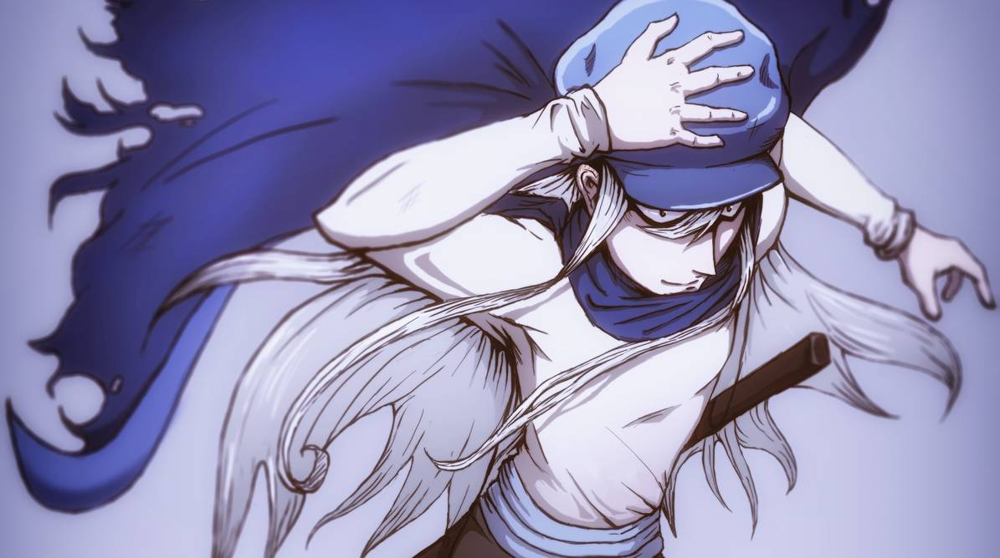

Kite (カイト, Kaito)
a Hunter and Ging Freecss' student.

Kite is stern and stoic, occasionally blunt to the point of appearing rude. Although some may regard them as cold-hearted, he is actually caring, fond of animals as they are of people.
Plot
- Hunter Exam arc
- Kite meets young Gon
- Chimera Ant arc
- Kite fires at a Chimera Ants' nest to save Gon and Killua
- Kite kills Yunju
- Kite defeats Hayga's entire division in one blow of his scythe
- Neferpitou with Kite's head
- Kite is born to the Chimera Ant Queen
- 13th Hunter Chairman Election arc
- Little Kite with Colt
- Koala confesses to Kite
- Observing the Small-billed Swans
Equipment
Tachi:
When he first met Gon, Kite used a long, slightly curved katana as his primary
weapon. It has a black scabbard and a matching hilt without a tsuba. He carried
it by hanging it to his left shoulder through a piece of thread attached to the koiguchi
(scabbard mouth). He used it to kill the foxbear that was attacking Gon.
Abilities & Powers
Enhanced Strength
Kite can swing his weapons with a single hand and no effort.
In his first appearance, he bisected an adult Foxbear with only a one-handed slash.
Enhanced Speed
Kite can match Gon and Killua in terms of running speed. Furthermore, he moved
so fast that Rammot, who easily kept up with the boys, could not track his movements.
Although it should be noted that Gon is a slow starter[19] and Killua still had Illumi's
needle planted in his brain at the time. He was also able to kill Yunju, a Squadron
Leader, in the few seconds Gon needed to charge his Jajanken. On more than one
occasion, Kite has been shown to be able to move his left arm so fast, and gracefully
it leaves two afterimages. Since he does this in preparation for a fight, it is likely this is
a sort of battle stance, implying he might have learned
some martial art.
Enhanced Stamina
Kite can cover long distances running alongside Gon and Killua without tiring.
A true testament to his endurance is given by the fact that he was able to fight
the monstrously powerful Neferpitou after the shock and blood loss resulting from
having his right arm cut off.
Immense Endurance
Kite withstood having his arm ripped off and still continued fighting, even inflicting
a few wounds on a newborn Neferpitou.
Keen Intellect
Kite is able to accurately assess the risks of a mission, and come up with
countermeasures to cope with dire situations. He seems particularly knowledgeable about
biology, enough to convince a corporation to enlist him to do an important biological
survey in Kakin.
Proficient Hand-to-Hand Combatant
Although he seems to prefer to rely on his weapons, Kite is hinted to be rather capable
at fighting with his bare hands. In the anime, he single-handedly redirected Yunju's attacks
and landed a high kick on his face. When his corpse was under the effect of Neferpitou's
ability, he was unable to use Nen, but Shoot still commented he had a hard time defeating
him and that he was dangerous nonetheless.
Master Weapon Specialist
Having chosen an ability that forces him to use a random weapon, it can be inferred
that Kite is extremely adaptable: he can wield blunt weapons, firearms, and swords with
dexterity, although he does seem to prefer some weapons over others: for example,
he has a strong distaste for the scythe. When he carried a katana, he wielded it with one
hand.
Kite's Nen Type: Conjuration
Crazy Slots (気狂いピエロクレイジースロット Mad Clown)
Kite's Nen ability is called Crazy Slots and allows him to conjure some weapons with a
clown affixed to it. A roulette appears on the clown's tongue with numbers 1 to 9, each
corresponding to a specific weapon. Whatever number randomly appears, the weapon that
corresponds to that number is conjured, which means that Kite cannot choose what weapon
to summon. He included this restriction to increase the power of the individual weapons.
The weapon drawn will not disappear until used. The clown on Crazy Slots can also talk
and comment on Kite's actions and conditions, usually to his chagrin. Only three of his
weapons are shown in the manga: a scythe, a carbine, and a mace. According to Ging,
the Crazy Slots ability has a number that only comes up when Kite desperately does not
want to die. Its power is so great that Kite managed to reincarnate as Meruem's twin
sibling after his death.
Number 2: Scythe
Kite conjures a very sharp and enormous scythe. It cannot be dispelled until
Kite uses Silent Waltz, which is also the only way the scythe can be utilized.
Silent Waltz (死神の円舞曲サイレントワルツ Grim Reaper's Dance): After increasing the
size of the blade, Kite swings it in a circle, generating an invisible slash that propagates in
all directions. When he used it against a platoon of Chimera Ants, it bisected every one
of them and fell the trees around him.
Number 3: Mace
Kite conjures a clown-like mace or a stick, which he seems to wield the weapon
with a reverse grip. The true orientation and function of this weapon is still largely
unknown. The clown, however, refers to it as a "good number".
Number 4: Carbine
Kite conjures a carbine with its shape similar to a long-barreled handgun combined
with an extremely long buttstock. It can shoot powerful bullets in quick succession and
seemingly without making any noise. Regarding the "long-barreled" element described
above, alternatively, the front part/piece of the weapon is similar to and could be a type
of suppressor (even being distinctively colored in the anime),which would explain the lack
or reduced amount of noise.
Battles
Chimera Ant arc:
Kite vs. Yunju
Kite vs. Frog
Kite vs. Neferpitou
Kite's Corpse vs. Shoot McMahon and Knuckle Bine
Kite's Corpse vs. Gon Freecss
"I'm Kite. I'm a Hunter. I'm a disciple of Ging's."
(To Gon)
"Ging taught me hunting from the beginning. The last test he imposed on me is to find him. And this is much harder than any other hunt!"
(To Gon)
"All good Hunters get along well with animals."
(To Gon)
"He'll find you soon, Ging. Gon's the real thing. Real Hunters are well-liked by animals. And they're blessed with
good friends." Killua Zoldyck
(To himself)
"My instincts tell me that it's here."
(To Gon and Killua)
"NGL and Chimera Ants... this is the worst combination imaginable. This could turn out to be a biological hazard of unprecedented proportions!"
(To himself)
"During these fights, I can't keep looking out for you. If you can't beat him, you'd better go back. Or you'd be just a hindrance."
(To Gon and Killua)
"If you want to become an exceptional Hunter, this is the ideal training ground. But from here on it's going to be hell, whether we win or lose."
(To Gon and Killua)
"Don't turn your eyes. If they throw or shoot something at you, you won't be able to react to it."
(To Gon)
"If you aren't satisfied, then all the more reason to become stronger."
(To Gon and Killua)
"But that's exactly what worries me. What if we encounter some of them who do care about their comrades? What will you do then?"
(To himself)
"Who would allow you to kill yourself and reset? Keep living apologizing to me every day."
(To Koala)
TRIVIA
Kite is the first character to be shown in the manga.
In one of Hunter × Hunter's card collections, the character is also
alternatively named as "Kcyytt".
Kite did not play the Greed Island game properly, but he reveals that
Ging took him inside the game once.
His in-game nickname was probably "Ngig" (ＮＩＧＧ).
After entering NGL, Kite appears to wear the same outfit as before,
possibly suggesting that it was already made out entirely of natural fibers.
There is a running gag when Kite uses his Crazy Slots ability in which he
always complains he got a "bad spin". Despite this, he usually gets a very
good weapon for the situation at hand.
Kite is currently the only known Chimera Ant who both remembers their
past life and is of a different biological sex to their past self. They are also the
only Chimera Ant to show evident signs of growth.
The exact mechanics of Kite's rebirth are unknown. If the soul exists as a
physical or at least paranormal entity in the universe of the series, as Koala
may have implied, it is possible that Crazy Slots caused it to occupy the
body of a gestating Chimera Ant.
According to the "Hunter × Hunter Manual" section found in the Yu ☆ Yu ☆
Hakusho official character book (Shueisha Jump remix),* Kite's stats are:
| Story Arcs |
Mind |
Skill |
Body |
Nen |
Ingenuity |
Intelligence |
| Hunter Exam arc |
3/5 |
4/5 |
4/5 |
3/5 |
2/5 |
4/5 |
| Chimera Ant arc |
4/5 |
4/5 |
4/5 |
4/5 |
3/5 |
4/5 |